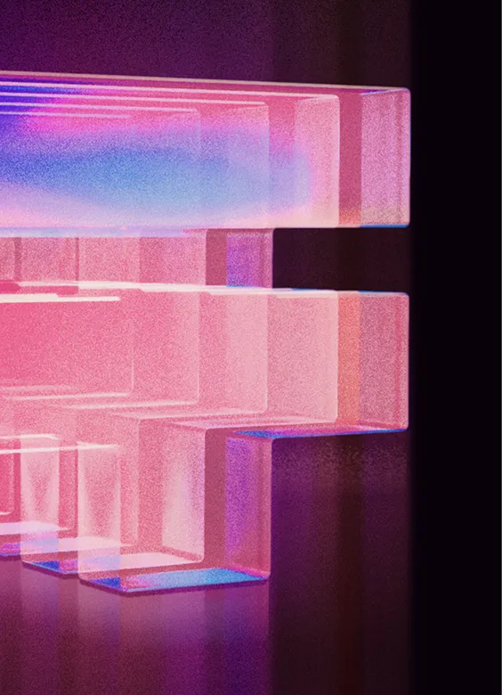

Local Currencies.
Global Networks.
Totemiq is building a network of local-currency stablecoin ecosystems across emerging markets — enabling trusted digital representations of national currencies to participate in the global digital economy.
0
Markets live
multiple in development
0+
Ecosystem partners
and growing
0
Stablecoin ecosystems
supported
$0M+
Transaction volume
across the network
$0M+
Assets referenced
and rising
01 The Next Financial Infrastructure Layer
Money is becoming digital.
Payments are becoming instant.
Commerce is becoming global.
Yet most of the world's consumers, businesses and institutions still operate in local currencies.
While digital asset infrastructure has rapidly expanded around major global currencies, the vast majority of emerging-market currencies remain disconnected from these new financial networks.
We believe the next phase of growth will be driven by trusted digital representations of local currencies that can move seamlessly across payment networks, financial institutions, applications and borders.
Totemiq is building the network that helps make this possible.
02 The Opportunity
The stablecoin opportunity is global. The next growth markets are local.
US-dollar stablecoins dominate today's market. Yet most of the world's consumers, businesses and governments transact in local currencies. As stablecoins become core financial infrastructure, demand will grow for trusted digital representations of local currencies that can participate in global networks while remaining anchored in domestic economies.
Invest
We back companies and initiatives building the future of local-currency digital financial infrastructure.
Enable
We provide technology platforms, expertise and operational support that help ecosystems launch and scale.
Connect
We bring together issuers, financial institutions, exchanges, custodians, payment providers and developers across markets.
03 Our Model
A capital-light model built for network-wide scale.
Totemiq does not issue stablecoins directly. Instead, we partner with regulated operators in each market — providing technology, strategic support and ecosystem access. This allows local regulatory alignment while enabling network-wide scale.
Capital
Strategic investment
Technology
Platforms & expertise
Local Issuers
Regulated operators
Stablecoins
Local-currency tokens
A Capital-Light Scaling Model
Local trust and regulatory alignment, combined with network-wide growth. The same playbook, repeated market after market.
- Scalability
- Low regulatory burden
- Repeatability
- International expansion
04 Why We Win
Three structural advantages.
Defensibility comes from how the model is built — not from any single market or token.
Proven Market Experience
Our ecosystem includes one of Africa's leading local-currency stablecoin initiatives — real traction, not a thesis on a slide.
Regulatory Alignment
We partner with local operators rather than seeking to become the regulated entity in every market. Lower burden, faster expansion.
Network Effects
Every new market, issuer and partner strengthens the value of the network for all participants. Compounding by design.
05 Portfolio & Ecosystem
Building a portfolio of local-currency ecosystems.
Totemiq sits at the intersection of local trust and global connectivity — supporting locally regulated operators while connecting them through shared technology and strategic partnerships.

South Africa
LiveSupporting the growth of the ZARP ecosystem — one of Africa’s leading local-currency stablecoin initiatives.
West Africa
In developmentExpanding partnerships and infrastructure for future local-currency stablecoin initiatives.
Emerging Markets
Network visionBuilding a network designed to connect local currencies to the global digital economy.
07 Why Now
Three forces are converging.
Stablecoins are becoming core infrastructure
Increasingly used for payments, settlement, treasury management and digital commerce.
Regulatory clarity is improving
Jurisdictions around the world are developing clearer frameworks for digital assets and stablecoins.
Emerging markets need better rails
Businesses and consumers demand faster, cheaper ways to move value domestically and across borders.
Together, these create a unique window to establish local-currency stablecoin networks before the market consolidates.
The future financial system won't be built around a single currency. It will be built on trusted networks of local currencies that move seamlessly between people, businesses, institutions and intelligent software.
From payments and treasury to cross-border settlement and agentic commerce, local-currency stablecoins will become an increasingly important part of global economic infrastructure.
“The infrastructure and ownership layer behind dozens of local-currency stablecoins.”
Let's build the next financial layer.
Whether you are a financial institution, fintech, payment provider, exchange, investor or ecosystem partner, we'd welcome the opportunity to explore how we can work together.